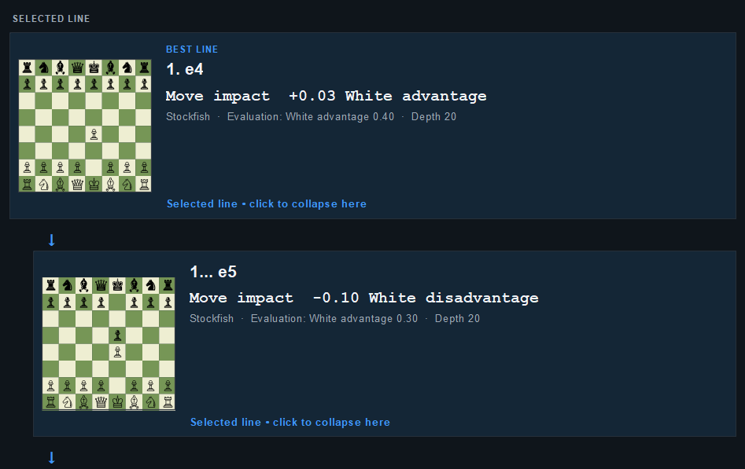
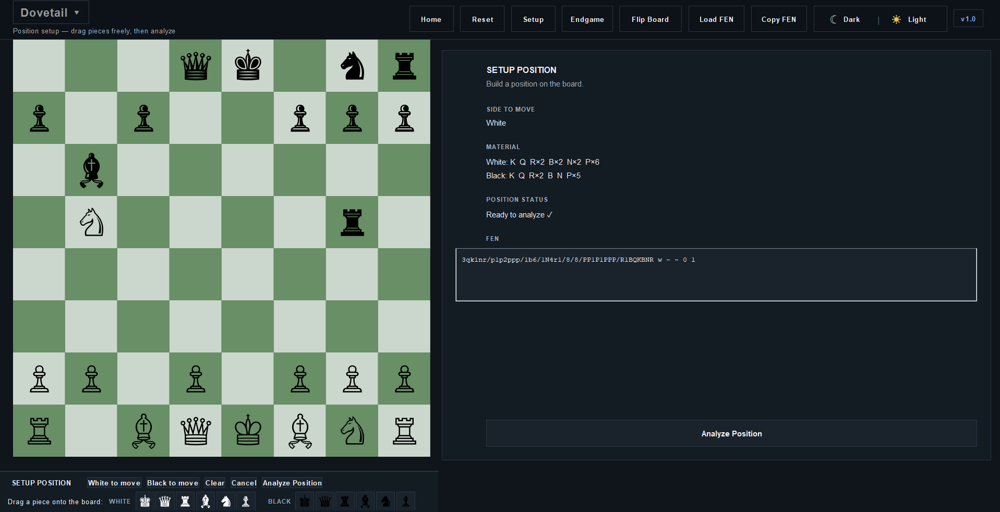
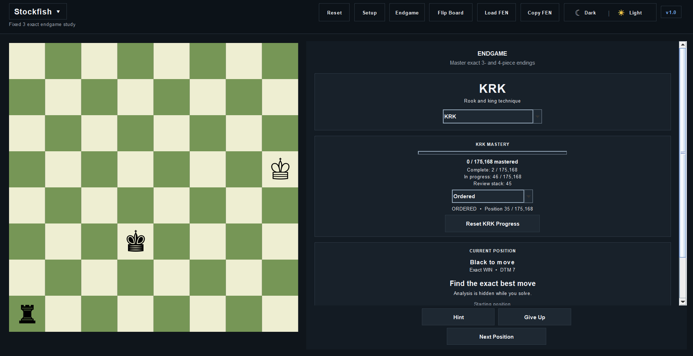

Canonical Graph
Represent each canonical chess position once so transpositions from different move orders converge on shared state.
03 / SOFTWARE
Persistent graph exploration, exact endgame solving, and interactive analysis.
Chess Engine explores positions through a shared canonical graph rather than rebuilding an isolated search tree for every line. Persistent walkers can reach the same position through different move orders, reuse the same node, and accumulate transpositions, visit history, solved outcomes, and analysis over time.

OVERVIEW
The central structure is a canonical PositionGraph. If two move orders reach the same chess position, they resolve to the same graph node rather than creating duplicate branches. Search history therefore becomes persistent information attached to positions and edges.
This makes the project as much an experiment in search organization as a chess application. The engine combines graph reuse with long-lived line walkers, solved-state propagation, native evaluation, and interactive inspection of the lines being explored.
SEARCH ARCHITECTURE
Represent each canonical chess position once so transpositions from different move orders converge on shared state.
Advance persistent line walkers on a fair diagonal schedule so many lines continue growing instead of repeatedly restarting at the root.
Combine persistent walkers with fair graph coverage so focused line development does not starve unexplored parts of the position graph.
Feed discoveries back through the graph with outcome and value propagation, allowing accumulated search knowledge to affect later analysis.
INTERFACE



EXACT ENDGAMES
v1.0 includes exact KQK, KRK, and KPK support together with a completed 30-family canonical four-piece catalog. Supported positions route to exact win/draw/loss and distance-to-mate information rather than heuristic evaluation.
The four-piece catalog includes an en-passant-aware KP-KP tablebase. Its packed runtime representation stores WDL and DTM in one byte per indexed state, reducing the core state array to roughly 32.11 MiB. The same exact data powers both analysis and the built-in endgame practice mode.
RELEASE
The first public release packages the application as a Maven-built JAR, with generated tablebase data distributed separately. A release regression suite verifies core chess rules, graph/FEN behavior, frozen Dovetail and Hybrid search, exact endgames, Stockfish integration, and the packed KP-KP runtime.
The final package was also tested from a clean standalone directory using only the distributable JAR and extracted tablebase bundle before the v1.0.0 release was published.
NEXT